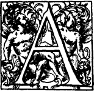
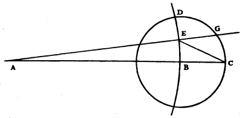
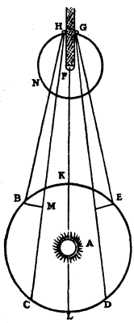
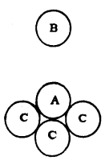
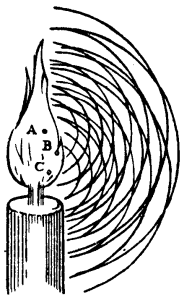
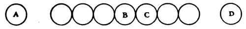
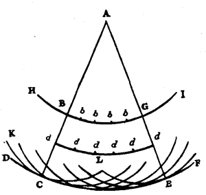

Chapter 4: Chapter I¶
4.1 On Rays Propagated in Straight Lines¶

s happens in all the sciences in which Geometry is applied to matter, the demonstrations concerning Optics are founded on truths drawn from experience. Such are that the rays of light are propagated in straight lines; that the angles of reflexion and of incidence are equal; and that in refraction the ray is bent according to the law of sines, now so well known, and which is no less certain than the preceding laws.
The majority of those who have written touching the various parts of Optics have contented themselves with presuming these truths. But some, more inquiring, have desired to investigate the origin and the causes, considering these to be in themselves wonderful effects of Nature. In which they advanced some ingenious things, but not however such that the most intelligent folk do not wish for better and more satisfactory explanations. Wherefore I here desire to propound what I have meditated on the subject, so as to contribute as much as I can to the explanation of this department of Natural Science, which, not without reason, is reputed to be one of its most difficult parts. I recognize myself to be much indebted to those who were the first to begin to dissipate the strange obscurity in which these things were enveloped, and to give us hope that they might be explained by intelligible reasoning. But, on the other hand I am astonished also that even here these have often been willing to offer, as assured and demonstrative, reasonings which were far from conclusive. For I do not find that any one has yet given a probable explanation of the first and most notable phenomena of light, namely why it is not propagated except in straight lines, and how visible rays, coming from an infinitude of diverse places, cross one another without hindering one another in any way.
I shall therefore essay in this book, to give, in accordance with the principles accepted in the Philosophy of the present day, some clearer and more probable reasons, firstly of these properties of light propagated rectilinearly; secondly of light which is reflected on meeting other bodies. Then I shall explain the phenomena of those rays which are said to suffer refraction on passing through transparent bodies of different sorts; and in this part I shall also explain the effects of the refraction of the air by the different densities of the Atmosphere.
Thereafter I shall examine the causes of the strange refraction of a certain kind of Crystal which is brought from Iceland. And finally I shall treat of the various shapes of transparent and reflecting bodies by which rays are collected at a point or are turned aside in various ways. From this it will be seen with what facility, following our new Theory, we find not only the Ellipses, Hyperbolas, and other curves which Mr. Des Cartes has ingeniously invented for this purpose; but also those which the surface of a glass lens ought to possess when its other surface is given as spherical or plane, or of any other figure that may be.
It is inconceivable to doubt that light consists in the motion of some sort of matter. For whether one considers its production, one sees that here upon the Earth it is chiefly engendered by fire and flame which contain without doubt bodies that are in rapid motion, since they dissolve and melt many other bodies, even the most solid; or whether one considers its effects, one sees that when light is collected, as by concave mirrors, it has the property of burning as a fire does, that is to say it disunites the particles of bodies. This is assuredly the mark of motion, at least in the true Philosophy, in which one conceives the causes of all natural effects in terms of mechanical motions. This, in my opinion, we must necessarily do, or else renounce all hopes of ever comprehending anything in Physics.
And as, according to this Philosophy, one holds as certain that the sensation of sight is excited only by the impression of some movement of a kind of matter which acts on the nerves at the back of our eyes, there is here yet one reason more for believing that light consists in a movement of the matter which exists between us and the luminous body.
Further, when one considers the extreme speed with which light spreads on every side, and how, when it comes from different regions, even from those directly opposite, the rays traverse one another without hindrance, one may well understand that when we see a luminous object, it cannot be by any transport of matter coming to us from this object, in the way in which a shot or an arrow traverses the air; for assuredly that would too greatly impugn these two properties of light, especially the second of them. It is then in some other way that light spreads; and that which can lead us to comprehend it is the knowledge which we have of the spreading of Sound in the air.
We know that by means of the air, which is an invisible and impalpable body, Sound spreads around the spot where it has been produced, by a movement which is passed on successively from one part of the air to another; and that the spreading of this movement, taking place equally rapidly on all sides, ought to form spherical surfaces ever enlarging and which strike our ears. Now there is no doubt at all that light also comes from the luminous body to our eyes by some movement impressed on the matter which is between the two; since, as we have already seen, it cannot be by the transport of a body which passes from one to the other. If, in addition, light takes time for its passage—which we are now going to examine—it will follow that this movement, impressed on the intervening matter, is successive; and consequently it spreads, as Sound does, by spherical surfaces and waves: for I call them waves from their resemblance to those which are seen to be formed in water when a stone is thrown into it, and which present a successive spreading as circles, though these arise from another cause, and are only in a flat surface.
To see then whether the spreading of light takes time, let us consider first whether there are any facts of experience which can convince us to the contrary. As to those which can be made here on the Earth, by striking lights at great distances, although they prove that light takes no sensible time to pass over these distances, one may say with good reason that they are too small, and that the only conclusion to be drawn from them is that the passage of light is extremely rapid. Mr. Des Cartes, who was of opinion that it is instantaneous, founded his views, not without reason, upon a better basis of experience, drawn from the Eclipses of the Moon; which, nevertheless, as I shall show, is not at all convincing. I will set it forth, in a way a little different from his, in order to make the conclusion more comprehensible.

Let A be the place of the sun, BD a part of the orbit or annual path of the Earth: ABC a straight line which I suppose to meet the orbit of the Moon, which is represented by the circle CD, at C.
Now if light requires time, for example one hour, to traverse the space which is between the Earth and the Moon, it will follow that the Earth having arrived at B, the shadow which it casts, or the interruption of the light, will not yet have arrived at the point C, but will only arrive there an hour after. It will then be one hour after, reckoning from the moment when the Earth was at B, that the Moon, arriving at C, will be obscured: but this obscuration or interruption of the light will not reach the Earth till after another hour. Let us suppose that the Earth in these two hours will have arrived at E. The Earth then, being at E, will see the Eclipsed Moon at C, which it left an hour before, and at the same time will see the sun at A. For it being immovable, as I suppose with Copernicus, and the light moving always in straight lines, it must always appear where it is. But one has always observed, we are told, that the eclipsed Moon appears at the point of the Ecliptic opposite to the Sun; and yet here it would appear in arrear of that point by an amount equal to the angle GEC, the supplement of AEC. This, however, is contrary to experience, since the angle GEC would be very sensible, and about 33 degrees. Now according to our computation, which is given in the Treatise on the causes of the phenomena of Saturn, the distance BA between the Earth and the Sun is about twelve thousand diameters of the Earth, and hence four hundred times greater than BC the distance of the Moon, which is 30 diameters. Then the angle ECB will be nearly four hundred times greater than BAE, which is five minutes; namely, the path which the earth travels in two hours along its orbit; and thus the angle BCE will be nearly 33 degrees; and likewise the angle CEG, which is greater by five minutes.
But it must be noted that the speed of light in this argument has been assumed such that it takes a time of one hour to make the passage from here to the Moon. If one supposes that for this it requires only one minute of time, then it is manifest that the angle CEG will only be 33 minutes; and if it requires only ten seconds of time, the angle will be less than six minutes. And then it will not be easy to perceive anything of it in observations of the Eclipse; nor, consequently, will it be permissible to deduce from it that the movement of light is instantaneous.
It is true that we are here supposing a strange velocity that would be a hundred thousand times greater than that of Sound. For Sound, according to what I have observed, travels about 180 Toises in the time of one Second, or in about one beat of the pulse. But this supposition ought not to seem to be an impossibility; since it is not a question of the transport of a body with so great a speed, but of a successive movement which is passed on from some bodies to others. I have then made no difficulty, in meditating on these things, in supposing that the emanation of light is accomplished with time, seeing that in this way all its phenomena can be explained, and that in following the contrary opinion everything is incomprehensible. For it has always seemed tome that even Mr. Des Cartes, whose aim has been to treat all the subjects of Physics intelligibly, and who assuredly has succeeded in this better than any one before him, has said nothing that is not full of difficulties, or even inconceivable, in dealing with Light and its properties.
But that which I employed only as a hypothesis, has recently received great seemingness as an established truth by the ingenious proof of Mr. Römer which I am going here to relate, expecting him himself to give all that is needed for its confirmation. It is founded as is the preceding argument upon celestial observations, and proves not only that Light takes time for its passage, but also demonstrates how much time it takes, and that its velocity is even at least six times greater than that which I have just stated.
For this he makes use of the Eclipses suffered by the little planets which revolve around Jupiter, and which often enter his shadow: and see what is his reasoning. Let A be the Sun, BCDE the annual orbit of the Earth, F Jupiter, GN the orbit of the nearest of his Satellites, for it is this one which is more apt for this investigation than any of the other three, because of the quickness of its revolution. Let G be this Satellite entering into the shadow of Jupiter, H the same Satellite emerging from the shadow.

Let it be then supposed, the Earth being at B some time before the last quadrature, that one has seen the said Satellite emerge from the shadow; it must needs be, if the Earth remains at the same place, that, after 42-1/2 hours, one would again see a similar emergence, because that is the time in which it makes the round of its orbit, and when it would come again into opposition to the Sun. And if the Earth, for instance, were to remain always at B during 30 revolutions of this Satellite, one would see it again emerge from the shadow after 30 times 42-1/2 hours. But the Earth having been carried along during this time to C, increasing thus its distance from Jupiter, it follows that if Light requires time for its passage the illumination of the little planet will be perceived later at C than it would have been at B, and that there must be added to this time of 30 times 42-1/2 hours that which the Light has required to traverse the space MC, the difference of the spaces CH, BH. Similarly at the other quadrature when the earth has come to E from D while approaching toward Jupiter, the immersions of the Satellite ought to be observed at E earlier than they would have been seen if the Earth had remained at D.
Now in quantities of observations of these Eclipses, made during ten consecutive years, these differences have been found to be very considerable, such as ten minutes and more; and from them it has been concluded that in order to traverse the whole diameter of the annual orbit KL, which is double the distance from here to the sun, Light requires about 22 minutes of time.
The movement of Jupiter in his orbit while the Earth passed from B to C, or from D to E, is included in this calculation; and this makes it evident that one cannot attribute the retardation of these illuminations or the anticipation of the eclipses, either to any irregularity occurring in the movement of the little planet or to its eccentricity.
If one considers the vast size of the diameter KL, which according to me is some 24 thousand diameters of the Earth, one will acknowledge the extreme velocity of Light. For, supposing that KL is no more than 22 thousand of these diameters, it appears that being traversed in 22 minutes this makes the speed a thousand diameters in one minute, that is 16-2/3 diameters in one second or in one beat of the pulse, which makes more than 11 hundred times a hundred thousand toises; since the diameter of the Earth contains 2,865 leagues, reckoned at 25 to the degree, and each each league is 2,282 Toises, according to the exact measurement which Mr. Picard made by order of the King in 1669. But Sound, as I have said above, only travels 180 toises in the same time of one second: hence the velocity of Light is more than six hundred thousand times greater than that of Sound. This, however, is quite another thing from being instantaneous, since there is all the difference between a finite thing and an infinite. Now the successive movement of Light being confirmed in this way, it follows, as I have said, that it spreads by spherical waves, like the movement of Sound.
But if the one resembles the other in this respect, they differ in many other things; to wit, in the first production of the movement which causes them; in the matter in which the movement spreads; and in the manner in which it is propagated. As to that which occurs in the production of Sound, one knows that it is occasioned by the agitation undergone by an entire body, or by a considerable part of one, which shakes all the contiguous air. But the movement of the Light must originate as from each point of the luminous object, else we should not be able to perceive all the different parts of that object, as will be more evident in that which follows. And I do not believe that this movement can be better explained than by supposing that all those of the luminous bodies which are liquid, such as flames, and apparently the sun and the stars, are composed of particles which float in a much more subtle medium which agitates them with great rapidity, and makes them strike against the particles of the ether which surrounds them, and which are much smaller than they. But I hold also that in luminous solids such as charcoal or metal made red hot in the fire, this same movement is caused by the violent agitation of the particles of the metal or of the wood; those of them which are on the surface striking similarly against the ethereal matter. The agitation, moreover, of the particles which engender the light ought to be much more prompt and more rapid than is that of the bodies which cause sound, since we do not see that the tremors of a body which is giving out a sound are capable of giving rise to Light, even as the movement of the hand in the air is not capable of producing Sound.
Now if one examines what this matter may be in which the movement coming from the luminous body is propagated, which I call Ethereal matter, one will see that it is not the same that serves for the propagation of Sound. For one finds that the latter is really that which we feel and which we breathe, and which being removed from any place still leaves there the other kind of matter that serves to convey Light. This may be proved by shutting up a sounding body in a glass vessel from which the air is withdrawn by the machine which Mr. Boyle has given us, and with which he has performed so many beautiful experiments. But in doing this of which I speak, care must be taken to place the sounding body on cotton or on feathers, in such a way that it cannot communicate its tremors either to the glass vessel which encloses it, or to the machine; a precaution which has hitherto been neglected. For then after having exhausted all the air one hears no Sound from the metal, though it is struck.
One sees here not only that our air, which does not penetrate through glass, is the matter by which Sound spreads; but also that it is not the same air but another kind of matter in which Light spreads; since if the air is removed from the vessel the Light does not cease to traverse it as before.
And this last point is demonstrated even more clearly by the celebrated experiment of Torricelli, in which the tube of glass from which the quicksilver has withdrawn itself, remaining void of air, transmits Light just the same as when air is in it. For this proves that a matter different from air exists in this tube, and that this matter must have penetrated the glass or the quicksilver, either one or the other, though they are both impenetrable to the air. And when, in the same experiment, one makes the vacuum after putting a little water above the quicksilver, one concludes equally that the said matter passes through glass or water, or through both.
As regards the different modes in which I have said the movements of Sound and of Light are communicated, one may sufficiently comprehend how this occurs in the case of Sound if one considers that the air is of such a nature that it can be compressed and reduced to a much smaller space than that which it ordinarily occupies. And in proportion as it is compressed the more does it exert an effort to regain its volume; for this property along with its penetrability, which remains notwithstanding its compression, seems to prove that it is made up of small bodies which float about and which are agitated very rapidly in the ethereal matter composed of much smaller parts. So that the cause of the spreading of Sound is the effort which these little bodies make in collisions with one another, to regain freedom when they are a little more squeezed together in the circuit of these waves than elsewhere.
But the extreme velocity of Light, and other properties which it has, cannot admit of such a propagation of motion, and I am about to show here the way in which I conceive it must occur. For this, it is needful to explain the property which hard bodies must possess to transmit movement from one to another.
When one takes a number of spheres of equal size, made of some very hard substance, and arranges them in a straight line, so that they touch one another, one finds, on striking with a similar sphere against the first of these spheres, that the motion passes as in an instant to the last of them, which separates itself from the row, without one's being able to perceive that the others have been stirred. And even that one which was used to strike remains motionless with them. Whence one sees that the movement passes with an extreme velocity which is the greater, the greater the hardness of the substance of the spheres.
But it is still certain that this progression of motion is not instantaneous, but successive, and therefore must take time. For if the movement, or the disposition to movement, if you will have it so, did not pass successively through all these spheres, they would all acquire the movement at the same time, and hence would all advance together; which does not happen. For the last one leaves the whole row and acquires the speed of the one which was pushed. Moreover there are experiments which demonstrate that all the bodies which we reckon of the hardest kind, such as quenched steel, glass, and agate, act as springs and bend somehow, not only when extended as rods but also when they are in the form of spheres or of other shapes. That is to say they yield a little in themselves at the place where they are struck, and immediately regain their former figure. For I have found that on striking with a ball of glass or of agate against a large and quite thick thick piece of the same substance which had a flat surface, slightly soiled with breath or in some other way, there remained round marks, of smaller or larger size according as the blow had been weak or strong. This makes it evident that these substances yield where they meet, and spring back: and for this time must be required.
Now in applying this kind of movement to that which produces Light there is nothing to hinder us from estimating the particles of the ether to be of a substance as nearly approaching to perfect hardness and possessing a springiness as prompt as we choose. It is not necessary to examine here the causes of this hardness, or of that springiness, the consideration of which would lead us too far from our subject. I will say, however, in passing that we may conceive that the particles of the ether, notwithstanding their smallness, are in turn composed of other parts and that their springiness consists in the very rapid movement of a subtle matter which penetrates them from every side and constrains their structure to assume such a disposition as to give to this fluid matter the most overt and easy passage possible. This accords with the explanation which Mr. Des Cartes gives for the spring, though I do not, like him, suppose the pores to be in the form of round hollow canals. And it must not be thought that in this there is anything absurd or impossible, it being on the contrary quite credible that it is this infinite series of different sizes of corpuscles, having different degrees of velocity, of which Nature makes use to produce so many marvellous effects.
But though we shall ignore the true cause of springiness we still see that there are many bodies which possess this property; and thus there is nothing strange in supposing that it exists also in little invisible bodies like the particles of the Ether. Also if one wishes to seek for any other way in which the movement of Light is successively communicated, one will find none which agrees better, with uniform progression, as seems to be necessary, than the property of springiness; because if this movement should grow slower in proportion as it is shared over a greater quantity of matter, in moving away from the source of the light, it could not conserve this great velocity over great distances. But by supposing springiness in the ethereal matter, its particles will have the property of equally rapid restitution whether they are pushed strongly or feebly; and thus the propagation of Light will always go on with an equal velocity.

And it must be known that although the particles of the ether are not ranged thus in straight lines, as in our row of spheres, but confusedly, so that one of them touches several others, this does not hinder them from transmitting their movement and from spreading it always forward. As to this it is to be remarked that there is a law of motion serving for this propagation, and verifiable by experiment. It is that when a sphere, such as A here, touches several other similar spheres CCC, if it is struck by another sphere B in such a way as to exert an impulse against all the spheres CCC which touch it, it transmits to them the whole of its movement, and remains after that motionless like the sphere B. And without supposing that the ethereal particles are of spherical form (for I see indeed no need to suppose them so) one may well understand that this property of communicating an impulse does not fail to contribute to the aforesaid propagation of movement.
Equality of size seems to be more necessary, because otherwise there ought to be some reflexion of movement backwards when it passes from a smaller particle to a larger one, according to the Laws of Percussion which I published some years ago.
However, one will see hereafter that we have to suppose such an equality not so much as a necessity for the propagation of light as for rendering that propagation easier and more powerful; for it is not beyond the limits of probability that the particles of the ether have been made equal for a purpose so important as that of light, at least in that vast space which is beyond the region of atmosphere and which seems to serve only to transmit the light of the Sun and the Stars.

I have then shown in what manner one may conceive Light to spread successively, by spherical waves, and how it is possible that this spreading is accomplished with as great a velocity as that which experiments and celestial observations demand. Whence it may be further remarked that although the particles are supposed to be in continual movement (for there are many reasons for this) the successive propagation of the waves cannot be hindered by this; because the propagation consists nowise in the transport of those particles but merely in a small agitation which they cannot help communicating to those surrounding, notwithstanding any movement which may act on them causing them to be changing positions amongst themselves.
But we must consider still more particularly the origin of these waves, and the manner in which they spread. And, first, it follows from what has been said on the production of Light, that each little region of a luminous body, such as the Sun, a candle, or a burning coal, generates its own waves of which that region is the centre. Thus in the flame of a candle, having distinguished the points A, B, C, concentric circles described about each of these points represent the waves which come from them. And one must imagine the same about every point of the surface and of the part within the flame.
But as the percussions at the centres of these waves possess no regular succession, it must not be supposed that the waves themselves follow one another at equal distances: and if the distances marked in the figure appear to be such, it is rather to mark the progression of one and the same wave at equal intervals of time than to represent several of them issuing from one and the same centre.
After all, this prodigious quantity of waves which traverse one another without confusion and without effacing one another must not be deemed inconceivable; it being certain that one and the same particle of matter can serve for many waves coming from different sides or even from contrary directions, not only if it is struck by blows which follow one another closely but even for those which act on it at the same instant. It can do so because the spreading of the movement is successive. This may be proved by the row of equal spheres of hard matter, spoken of above. If against this row there are pushed from two opposite sides at the same time two similar spheres A and D, one will see each of them rebound with the same velocity which it had in striking, yet the whole row will remain in its place, although the movement has passed along its whole length twice over. And if these contrary movements happen to meet one another at the middle sphere, B, or at some other such as C, that sphere will yield and act as a spring at both sides, and so will serve at the same instant to transmit these two movements.

But what may at first appear full strange and even incredible is that the undulations produced by such small movements and corpuscles, should spread to such immense distances; as for example from the Sun or from the Stars to us. For the force of these waves must grow feeble in proportion as they move away from their origin, so that the action of each one in particular will without doubt become incapable of making itself felt to our sight. But one will cease to be astonished by considering how at a great distance from the luminous body an infinitude of waves, though they have issued from different points of this body, unite together in such a way that they sensibly compose one single wave only, which, consequently, ought to have enough force to make itself felt. Thus this infinite number of waves which originate at the same instant from all points of a fixed star, big it may be as the Sun, make practically only one single wave which may well have force enough to produce an impression on our eyes. Moreover from each luminous point there may come many thousands of waves in the smallest imaginable time, by the frequent percussion of the corpuscles which strike the Ether at these points: which further contributes to rendering their action more sensible.

There is the further consideration in the emanation of these waves, that each particle of matter in which a wave spreads, ought not to communicate its motion only to the next particle which is in the straight line drawn from the luminous point, but that it also imparts some of it necessarily to all the others which touch it and which oppose themselves to its movement. So it arises that around each particle there is made a wave of which that particle is the centre. Thus if DCF is a wave emanating from the luminous point A, which is its centre, the particle B, one of those comprised within the sphere DCF, will have made its particular or partial wave KCL, which will touch the wave DCF at C at the same moment that the principal wave emanating from the point A has arrived at DCF; and it is clear that it will be only the region C of the wave KCL which will touch the wave DCF, to wit, that which is in the straight line drawn through AB. Similarly the other particles of the sphere DCF, such as bb, dd, etc., will each make its own wave. But each of these waves can be infinitely feeble only as compared with the wave DCF, to the composition of which all the others contribute by the part of their surface which is most distant from the centre A.
One sees, in addition, that the wave DCF is determined by the distance attained in a certain space of time by the movement which started from the point A; there being no movement beyond this wave, though there will be in the space which it encloses, namely in parts of the particular waves, those parts which do not touch the sphere DCF. And all this ought not to seem fraught with too much minuteness or subtlety, since we shall see in the sequel that all the properties of Light, and everything pertaining to its reflexion and its refraction, can be explained in principle by this means. This is a matter which has been quite unknown to those who hitherto have begun to consider the waves of light, amongst whom are Mr. Hooke in his Micrographia, and Father Pardies, who, in a treatise of which he let me see a portion, and which he was unable to complete as he died shortly afterward, had undertaken to prove by these waves the effects of reflexion and refraction. But the chief foundation, which consists in the remark I have just made, was lacking in his demonstrations; and for the rest he had opinions very different from mine, as may be will appear some day if his writing has been preserved.
To come to the properties of Light. We remark first that each portion of a wave ought to spread in such a way that its extremities lie always between the same straight lines drawn from the luminous point. Thus the portion BG of the wave, having the luminous point A as its centre, will spread into the arc CE bounded by the straight lines ABC, AGE. For although the particular waves produced by the particles comprised within the space CAE spread also outside this space, they yet do not concur at the same instant to compose a wave which terminates the movement, as they do precisely at the circumference CE, which is their common tangent.
And hence one sees the reason why light, at least if its rays are not reflected or broken, spreads only by straight lines, so that it illuminates no object except when the path from its source to that object is open along such lines.
For if, for example, there were an opening BG, limited by opaque bodies BH, GI, the wave of light which issues from the point A will always be terminated by the straight lines AC, AE, as has just been shown; the parts of the partial waves which spread outside the space ACE being too feeble to produce light there.
Now, however small we make the opening BG, there is always the same reason causing the light there to pass between straight lines; since this opening is always large enough to contain a great number of particles of the ethereal matter, which are of an inconceivable smallness; so that it appears that each little portion of the wave necessarily advances following the straight line which comes from the luminous point. Thus then we may take the rays of light as if they were straight lines.
It appears, moreover, by what has been remarked touching the feebleness of the particular waves, that it is not needful that all the particles of the Ether should be equal amongst themselves, though equality is more apt for the propagation of the movement. For it is true that inequality will cause a particle by pushing against another larger one to strive to recoil with a part of its movement; but it will thereby merely generate backwards towards the luminous point some partial waves incapable of causing light, and not a wave compounded of many as CE was.
Another property of waves of light, and one of the most marvellous, is that when some of them come from different or even from opposing sides, they produce their effect across one another without any hindrance. Whence also it comes about that a number of spectators may view different objects at the same time through the same opening, and that two persons can at the same time see one another's eyes. Now according to the explanation which has been given of the action of light, how the waves do not destroy nor interrupt one another when they cross one another, these effects which I have just mentioned are easily conceived. But in my judgement they are not at all easy to explain according to the views of Mr. Des Cartes, who makes Light to consist in a continuous pressure merely tending to movement. For this pressure not being able to act from two opposite sides at the same time, against bodies which have no inclination to approach one another, it is impossible so to understand what I have been saying about two persons mutually seeing one another's eyes, or how two torches can illuminate one another.